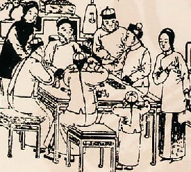
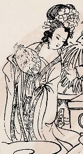

（３5）麻雀の起こり
|
昭和８年、専門誌「麻雀日本（麻雀日本社）」の１月号に掲載された梁武山氏のコラム。たいへん面白いのでご紹介する。とはいうものの、ここに書かれたこと＝これが麻雀の歴史 と即断してしまうのは、ちと早計である。
たとえば、馬吊は30枚とか40枚の紙札ゲームであったが、時代が下がるとともに枚数が増え、やがて数牌は今日の108枚となった。この時代になって、水滸伝の登場人物も描かれた札が登場したと云うのが今日の定説である。
すなわち水滸伝の登場人物が108人であったから108枚になったわけではない。そこで、「枚数が108枚なのは、水滸伝の登場人物に擬したため」というのは本末転倒の話となる。
どのようなゲームでも、古代ゲームが現在の形に変化してくるには、多くのゲームの取捨融合という過程がある。その過程はココにも書いたように結構複雑で、現時点でも結論はでていない。
それでもなお、このコラムは多くの示唆に富んでおり、麻雀学的に大変参考になる。
|
麻雀はすなわち家雀（いえすずめ）であって、之を扱ふ音が雀の鳴き声に似ているため此の二字を当てはめたもので、原来は馬将（マーチャン）である。「麻雀」の正しい発音はマ−チャオで、マ−チヤンとは発音されない。
牌がパチパチする音が、ただ雀の鳴き声に似ているというだけでは何も面白くないが、これを歴史的に研究すると中々由来が深い。
麻雀の萬子、筒子（又銅子とも云ひ、銭のこと）、索子（銭を通す紐のこと）の数が全部で108枚なのは、水滸伝の英堆三十六天堽星（てんこうせい）、七十二地刹星（ちさつせい）（共に凶神）に型どったもので、明朝の時始めて作り出された。之を馬将、馬掌、或は馬吊脚と云った。紙で作り、価が廉いだけに今日尚盛んに使用されてゐる。
宋朝の時、宋江（そうこう）、兵を山東（さんとう）に起し、梁山泊に寨（さい＝砦）を築く。朝廷、張収夜を大将として、此を討たせた。張は四方に布告して、宋江を捕へた者には銭（大銅銭）九萬を賞すと。そこで捕盗役すなわち馬快班と云ふものが編成された。是が馬将（マーチャン）と云ふ名の由来である。
馬将は当時、
万字（一万より九万まで）各四杖 三十六枚
筒字（一筒より九筒まで）各四紋 三十六枚
索字（一索より九索まで）各四枚 三十六枚
合計一〇八枚からできて居たが、清朝に至り長髪族(太平天国軍)の東南西北四将にちなみ、東・西・南・北風 各四枚 計十六枚を増した。
（史曰 楊秀清為東王、馮雲山為南王、粛朝貴為西王、韋昌輝為北王）
さらに中、發、白、各四枚 計十二枚を加へて全部で百三十六枚の今日の麻雀になった。
A注：長髪族＝太平天国軍に対する清朝の呼称。清朝（満州族）の弁髪に対して、漢民族（オトコミンゾクではない....(-_-)）伝統の髪型をしていたので、こう呼ばれた。
昔一定の距離を隔てゝ箭（せん＝矢）を壺中に投入れる競技が行はれ、此を投壷（とうこ）と云った。即ち各人三本の箭を投げて、其の多く壺中に入りたるものを勝ちとするのである。壺は音和、相齊ふ形で、和了は即ち整齊の意味である。
 は箭の壺に中（あた）る形、 は箭の壺に中（あた）る形、 は箭を發っせんとする準備、 は箭を發っせんとする準備、 は敗者の呑まされる一杯の酒である。此等のものが白い象牙の上に紅く青く色彩、彫刻され、見るからに芸術的である。また此を弄する方法が千変萬化幻影の如しで、今日一般の歓迎を受くるに至ったは、元より其処である。 は敗者の呑まされる一杯の酒である。此等のものが白い象牙の上に紅く青く色彩、彫刻され、見るからに芸術的である。また此を弄する方法が千変萬化幻影の如しで、今日一般の歓迎を受くるに至ったは、元より其処である。
あの変化極りなき支那料理を発明した支那人ならでは、到底斯んな巧妙な遊戯法は考へだされぬ事と思ふ。
|
ついでながら、中国女性の素敵なチャイナドレスは漢民族の伝統衣装ではなく、当時の支配階級であった満州族の伝統衣装。
寧波・麻将起源地陳列館パンフより

漢民族の伝統衣装は、天女伝説に出てくるような長い袖がひらひらした感じの衣装。↓これは楊貴妃（玄宗がメロメロになったのがよく分かる....）。
寧波・麻将起源地陳列館パンフより

|